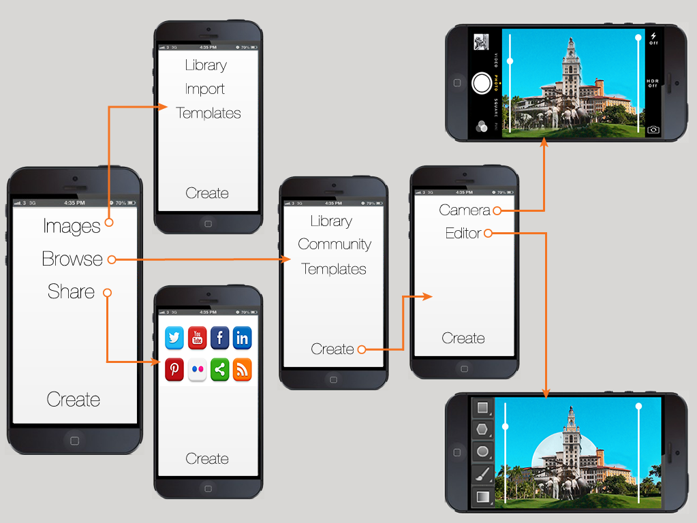
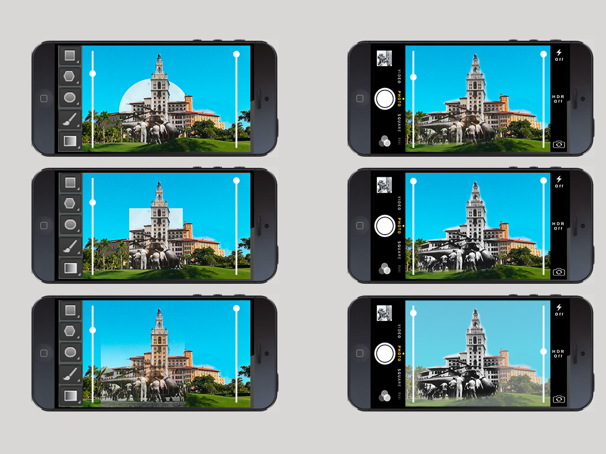

A Look Into the Past
A design project for a 5 in 5
Throughout my journey, I found some pretty interesting spots. The first was this plaque which was located on the side of the parking garage. It Reads "University of Miami School of Medicine 1952: House in the servants' quarters of the Biltmore Hotel, this location would function as the primary teaching site for the University's medical students until 1969"
This is just one of the many historic plaques that are located around the hotel, but everytime I see one I really get a feeling of wonder looking at a piece of history in Coral Gables.
All this looking into the past stuff got me thinking about a cool way to make this feeling be reproduced, and I think this concept for an app does a good job of trying to share that feeling with other people
Project Highlights

Art Inspirations
A Second Shot
This one was a bit rougher, I really liked how both of these images aligned, and I thought that using a gradient might help make the transition look smoother. Although it didn't come out as nice as I would have liked, I think that the gradient tool could be useful in other projects. So I decided to add it as an option to my concept app.
Third Example
I think my third example really shows what this app could be capable of. I found this greate picture of these 2 gents just sitting right by the famous Biltmore Fountain. Although it took some time, I think I was able to get a 90% match on the angle the original photographer had
Even though the stairs don't line up perfectly, I think with proper blending, and someone who really knew what they were doing, this image could really turn out awesome.
One of the things I really enjoyed about this project was it almost felt like some kind of historical easter egg hunting trying to find the spots where these original photos were shot.
I would recommend that anyone who has some old photos to go out there, and try to find where they were taken. Even without my magical app, you can also have this experience with very basic Photoshop or Gimp knowledge. Happy exploring!
Application User Flow
When designing the UI and flow of the app, I payed close attention to the process which I had just underwent myself in order accurately find out what could be improved about the whole process.
Editor UI
When trying to decide how I wanted the editor in the application to work, I took the features that I thought were most important and attempted to implement them using a basic mockup. The vertical sliders were added because I wanted an easy way for users to manipulate the opacticy of both images (new & old) independantly. This would allow for easier setup and manipulation of projects.
Most people got a kick out of my project and some even commented about how they would use the app if it actually existed. I believe some time later, someone created an application for iOS which did exactly this, but in my mind I'd like to think that I came up with it first! I hope you enjoyed my project.